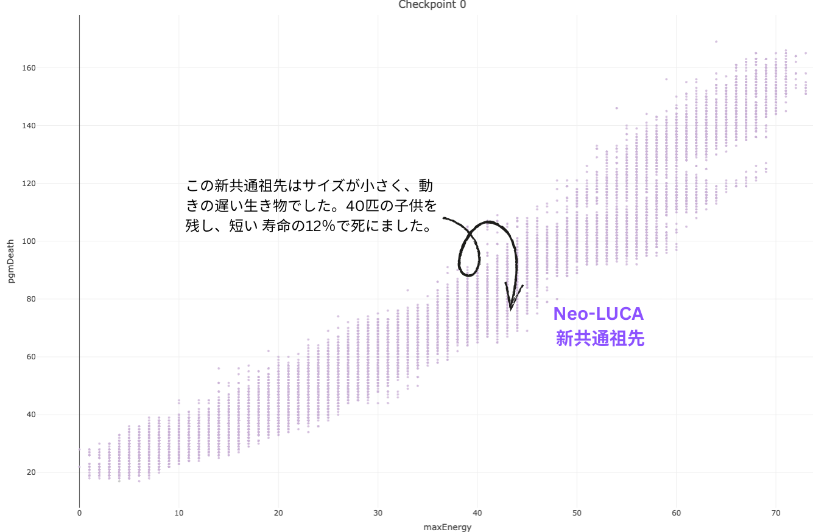
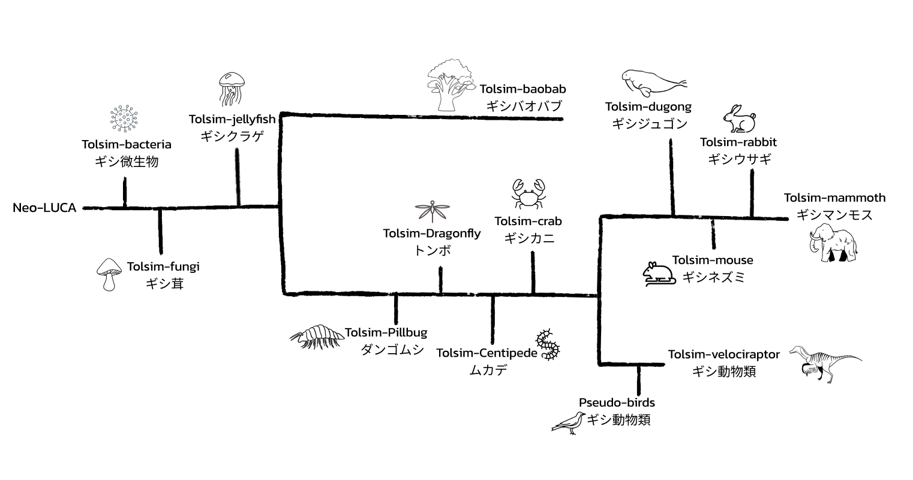

Open-Ended Evolution Dashboard
トルシム惑星の生命の樹の進化
一つの点が一匹の生き物を表している。時間が経つと、体の大きさ、動きの速さ、寿命、賢さ、子供の数が進化によって変化する。ここでは、体の大きさと寿命を表示している。１つの種(スピーシーズ)から新種が進化したところに、木が枝分かれをしている。
新種の誕生
突然変異によって、生き物は自分と少し違う子供を産む。その「ちょっと違う」が生存に役立つ変異の場合、子供が生き残って、自分の子供を産んで、数世代で「大分違う」生き物になる。

Phylogenetic Tree
系統樹。生物の進化の道筋
